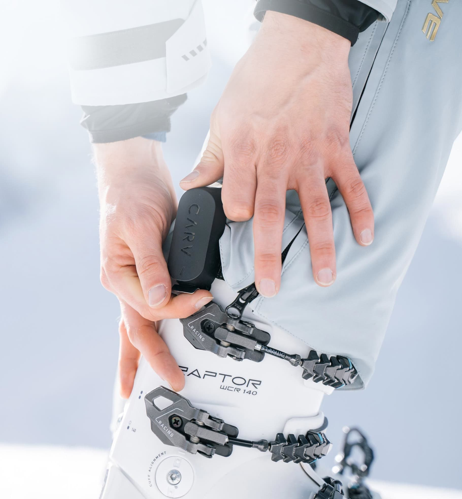
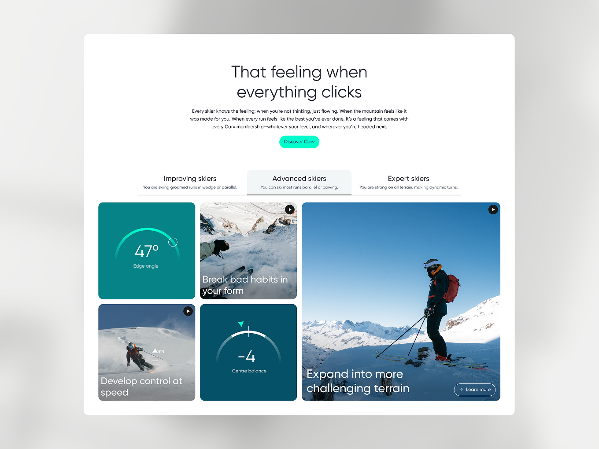
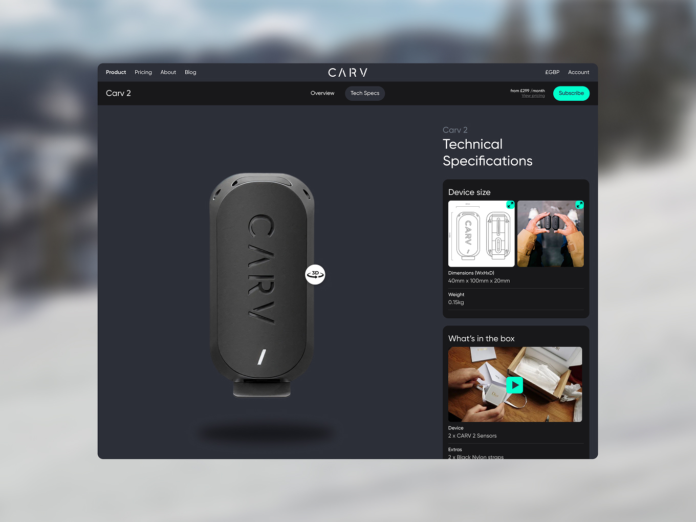
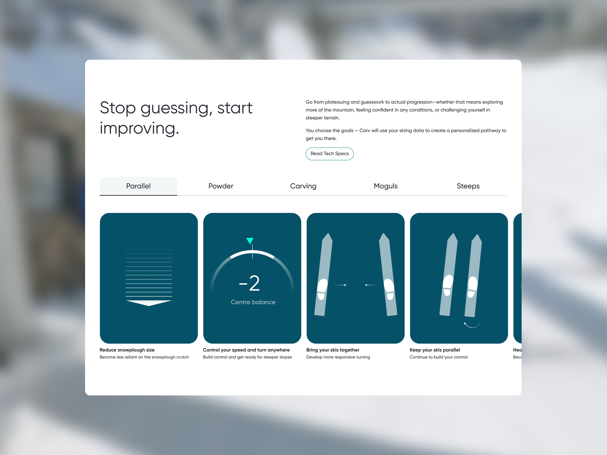
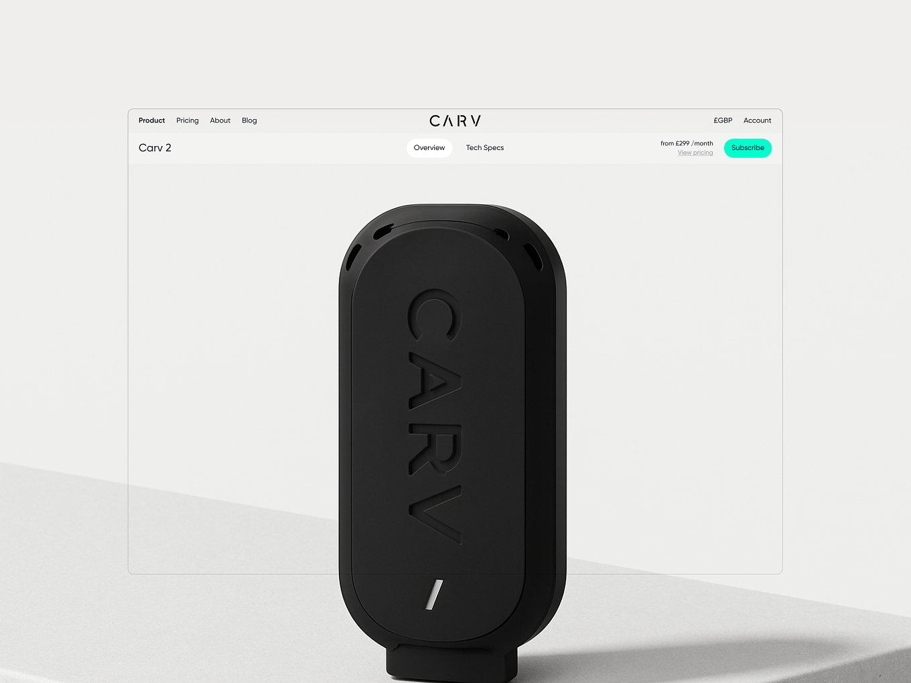
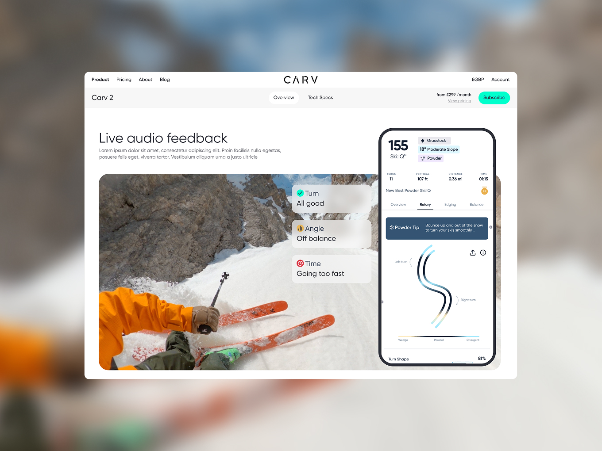
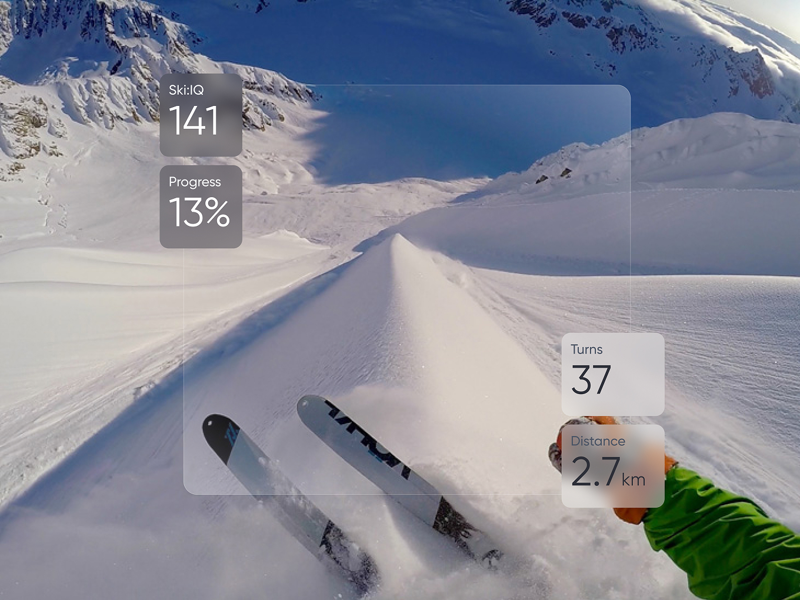
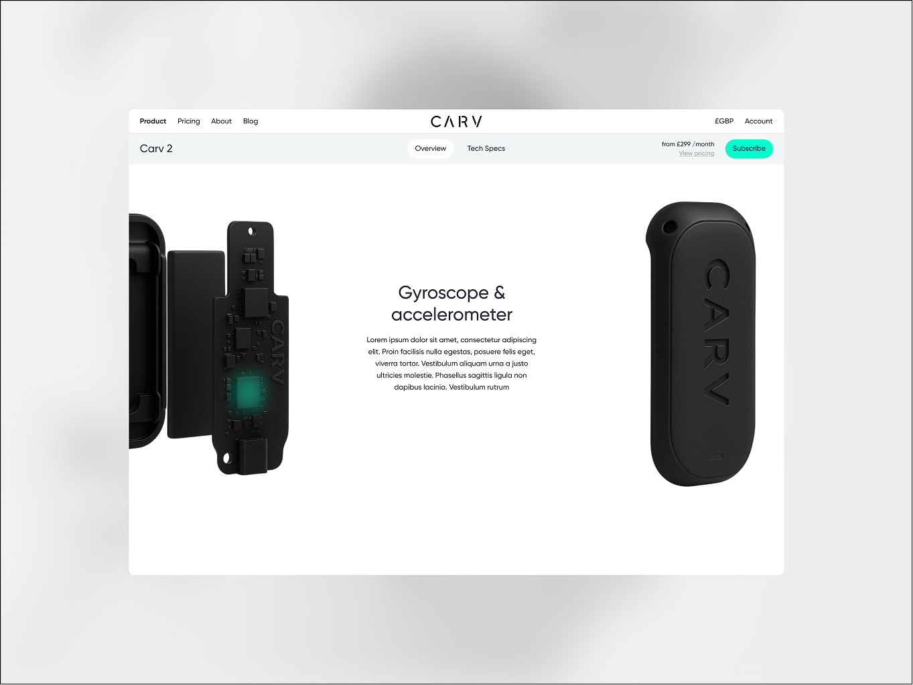

Carv
Carving a Clearer Run
CARV, the wearable ski coach used by everyone from weekend skiers to Olympians like Ted Ligety, came to us needing to broaden its audience. The product had been built and marketed for expert skiers analysing every metric of their run, but the brand wanted to open up to a much wider, more mainstream crowd without losing the technical depth power users relied on. I led the IA restructure, content strategy and design system work behind the relaunch, driving a +9% increase in product page conversion through three months of live testing.
Results
- +9% increase in product page conversion
- Fewer support tickets on pricing confusion
- Stronger engagement across both new and expert audiences

The Challenge
CARV's website had grown organically for years and it showed. Three overloaded pages (Sensors, Analysis, Coaching) tried to explain the product but buried the one thing that mattered most: that you could actually buy it. Information was duplicated across pages, navigation had dead links, and the tone spoke fluently to ski pros but alienated everyone else. On top of that, the subscription model (a Season Pass with free sensors versus a Daily Pass with a one-off sensor cost) confused users and even tripped up the client's own team when explaining it.


The Approach
We couldn't get direct analytics access, so discovery leaned on client walkthroughs and Hotjar heatmaps to find where people were dropping off and what they were ignoring. Since CARV had no real category competitors, I benchmarked against consumer tech brands known for making complex products feel simple: Apple Vision Pro, Meta Quest, DJI, Oura Ring, GoPro. A pattern emerged across all of them: one single source-of-truth product page, technical depth pushed into a separate tab, and benefit-led storytelling up front.
That became the blueprint. I sorted the tangle of existing content into four clear buckets, physical features, technology, benefits, and technical specs, then rebuilt the sitemap around a single overview page with a dedicated specs section for the technical crowd. Pricing got the same treatment: I audited 16 subscription products (DAZN, Discovery+, F1TV, NOW TV, WeWork and others) to fix the tier terminology and move subscription info earlier in the journey.
From there it was wireframes built with the copywriter and client, then UI design running in parallel with the client's engineering team, who built and live-tested components in PostHog as we designed. The output was a fully atomic design system of 15 responsive components, giving CARV a scalable toolkit to keep optimising and building new pages long after the project wrapped.

The Outcome
Once the new structure and pricing model went live, CARV saw a 9% lift in product page conversion, plus fewer support tickets around pricing confusion and stronger session engagement across both new and expert audiences. More importantly, the brand now had a scalable system rather than a one-off redesign, letting the team keep testing and building on the same foundation.


Reflection
The real blocker wasn't how CARV looked, it was that users couldn't find a path to buy or understand what they were paying for. Fixing that, and borrowing visual cues from tech brands people already trusted, let CARV reach a mainstream audience without losing the expert base it was built on.

